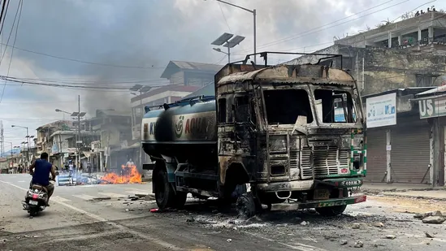

Patna high court halts caste survey in Bihar

The Patna high court on Thursday temporarily suspended Bihar’s ongoing caste-based survey, saying the controversial exercise in its present form virtually amounted to a census that impinged upon Parliament’s domain.
The order by a two-judge bench deals a major blow to Bihar’s plans of successfully counting the castes of all 104 million people in the state for the first time since Independence, and is also a political setback to the state’s ruling coalition.
By-laws in final stages, RWAs for apartments in Bihar to get registered soon

Apartment owners in Patna will soon be able to form and register residents’ welfare associations ( RWAs) with Bihar’s registration department as the state urban development department (UDD) is about to come up with by-laws for registration of such bodies, according to officials familiar with the matter.
HC stay on caste survey in Bihar: BJP seeks Nitish’s resignation

A war of words broke out between the ruling alliance in Bihar and the Opposition BJP as soon as the Patna High Court decision staying the ongoing caste survey with immediate effect became public on Thursday, with BJP even seeking the resignation of chief minister Nitish Kumar.
JD-U demands ban on Bajrang Dal, Nitish says united opposition will take stand

After Janata Dal-United (JD-U) MP Kaushlendra Kumar on Wednsday demanded that the Bajrang Dal should be banned “as it organises mob and whips up passion in the name of Ram, which leads to misunderstanding and problem,” Bihar chief minister Nitish Kumar on Thursday said the matter would be discussed when all the opposition parties would sit together and decide what is the best for the country.
Patna high court stays Bihar’s caste-based survey

The Patna high court on Thursday issued an interim order staying Bihar’s caste-based survey, saying prima facie the state government has no power to carry it out and the manner in which it has been fashioned would amount to a census and impinge upon Parliament’s legislative power.
Bihar, Jharkhand agree on settling pension issue for ₹843-cr, seek details from bank

The finance departments of Bihar and Jharkhand have finally fallen back on the banks to extract details of the pensioners to resolve the decades-old issue of division of pension liability between the two states, which has been awaiting resolution since Jharkhand was carved out of Bihar in November 2000, officials familiar with the matter said.
Ahead of Karnataka polls, unaccounted cash of ₹4 crore seized in Kolar

Ahead of Karnataka Assembly elections on May 10, the Kolar Gold Fields (KGF) Police on Thursday seized ₹4 crore of unaccounted cash from a house and a car in Kolar's Zion Hills.
Manipur violence: Train services stopped; BJP MLA attacked in Imphal. 10 points

Following the law and order situation, the Northeast Frontier Railway has stopped all Manipur-bound trains. "No trains are entering Manipur till the situation is improved. The decision has been taken after the Manipur government advised to stop train movement, said Sabyasachi De, CPRO of NF Railway, told to news agency ANI. Four trains have been cancelled. Initially, this decision has been taken only for May 5 and 6, the Indian Railways.
'When a guy like Dhoni hits you...': Ashwin spills the beans on how his ‘riskiest’ idea helped Sandeep Sharma outfox MSD

The Rajasthan Royals did an impressive double over the Chennai Super Kings in the 2023 Indian Premier League. Sanju Samson's men defied the odds to beat the MS Dhoni-led CSK at the latter's home ground (MA Chidambaram Stadium) in the first leg, and then cruised to a 32-run win over the men in yellow at home. But even as the second win was far more dominant for the Royals, the side earned laurels for their dramatic three-run victory over CSK in Chennai – and Sandeep Sharma was the architect of the sensational win.
Jaishankar welcomes Pakistan's Bilawal Bhutto-Zardari for SCO meeting | WATCH

External affairs minister S Jaishankar on Friday welcomed his Pakistani counterpart Bilawal Bhutto-Zardari for the meeting of the Council of Foreign Ministers (CFM) of the Shanghai Cooperation Organisation (SCO). The two exchanged pleasantries and posed for photographs before Bhutto-Zardari headed for the crucial meeting in Goa. Bilawal Bhutto-Zardari is the first Pakistani foreign minister to visit India in almost 12 years amid continuing strain in ties between the two countries on a host of issues, including cross-border terrorism in Jammu and Kashmir.